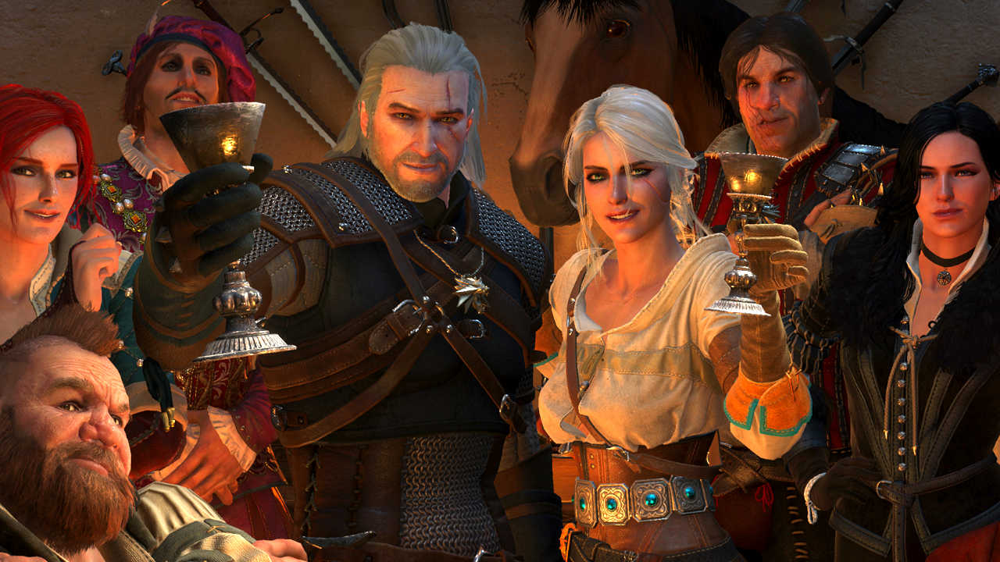

Wiedźmin 3: Dziki Gon (ang. The Witcher 3: Wild Hunt) – fabularna gra akcji wyprodukowana i wydana przez CD Projekt Red 19 maja 2015 na platformy Microsoft Windows, PlayStation 4 i Xbox One. Wersja na Nintendo Switch ukazała się 15 października 2019. Wydanie gry na PlayStation 5 i Xbox Series X/S zaplanowano na 2022 rok. Gra jest kontynuacją wydanego w 2007 roku Wiedźmina oraz Wiedźmina 2: Zabójców królów, który miał swoją premierę w 2011 roku. Tak jak poprzednie części, opowiada ona historię tytułowego wiedźmina – Geralta z Rivii – i jest osadzona w świecie wiedźmina, którego twórcą jest Andrzej Sapkowski. Produkcja jest ostatnią częścią cyklu, którego głównym bohaterem jest tytułowy wiedźmin, razem z nią stanowiącego trylogię.